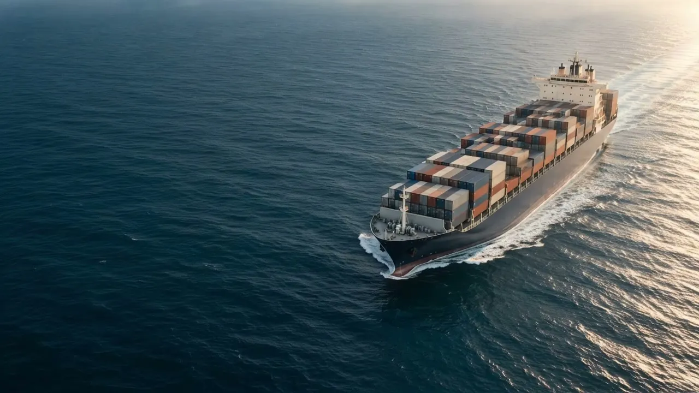

+ MARITIME TELEMEDICINE
让专业医疗，
随每一次远航抵达。
Across the ocean.
Closer to care.
连接船端健康设备与陆地医疗资源，
让远海之上的每一份健康需求，都有所依。
船端健康采集远程专家协同持续健康支持
SCROLL TO DISCOVER ↓01 THE CONNECTED CARE
海上与陆地之间，
让专业支持始终相连。
从一次健康信息采集，到一场跨越海洋的专业协同。
将设备、系统与医疗支持连接起来，
构建清晰、连贯的海上健康服务链路。
SHIP TO SHORE CONNECTION系统协同示意
海上需求，连接陆地专业支持点击节点探索链路 ↗
01 / ONBOARD每一次连接，
每一次连接，
都从海上需求开始。
面向船舶与海上作业场景，让健康信息与专业支持之间，建立更清晰的连接。
0104
让信息被看见从船端健康信息采集开始
让协同更清晰连接设备、系统与专业资源
让支持更连贯贯穿日常与海上作业场景

从船端的一次健康采集开始。
让每一份信息，成为专业支持的依据。
让陆地的专业，陪伴每一次远航。
跨越距离，连接持续而清晰的健康支持。
02 BUILT FOR MARITIME
一套协同系统，
连接每一次健康需求。
将船端设备与远程医疗管理平台融为一体，
让健康采集有依托，让远程支持有依据。
ONBOARD HEALTH STATION
 设备外观概念示意 · 非具体型号
设备外观概念示意 · 非具体型号
设备外观概念示意 · 非具体型号
远程健康支持工作台
演示连接已建立船端 → 医疗支持端
心电信息 / 功能示意
协同信息健康信息概览
→采集信息、服务记录与支持流程
01 / HARDWARE从船端，
从船端，
看见每一份健康信息。
面向海上环境的健康采集工作站，将多维健康信息汇集起来，为后续专业支持提供参考。
01多维信息采集血压、心电等指标支持以实际设备为准
02面向船端场景结合空间、网络及部署条件配置
03连接医疗支持与远程系统形成完整协同链路
03 PROFESSIONAL SUPPORT
专业，
始终在场。
从日常关怀，到关键时刻的专业指导。
让海上健康支持，多一份从容。
CARE WITHOUT
THE DISTANCE
THE DISTANCE
01日常健康咨询EVERYDAY HEALTH+
围绕海上人员的常见健康需求，提供专业咨询与健康管理建议，让日常关怀有处可寻。
02远程医疗指导REMOTE MEDICAL SUPPORT+
结合沟通信息与船端采集资料，协助建立专业医疗支持链路。具体服务内容以正式接入方案为准。
03应急处置指导EMERGENCY GUIDANCE+
通过既定服务通道连接专业支持，为海上突发健康需求提供指导，并衔接必要的线下医疗资源。
04合理用药指导MEDICATION GUIDANCE+
围绕随船药品与实际需求，提供专业用药咨询，帮助海上人员理解药品使用注意事项。
05船员健康科普HEALTH EDUCATION+
围绕海上作业与日常生活，分享健康防护、常见病预防与应急处置相关知识。
04 WHEREVER YOU SAIL
远航各有方向，
健康关怀始终如一。
理解不同海上场景，
为每一种远离陆地的工作与生活，
连接适合的医疗支持。
方案结合人员规模、设备配置与通信条件制定。场景为 AI 概念示意。